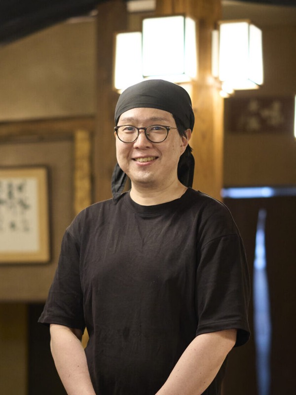
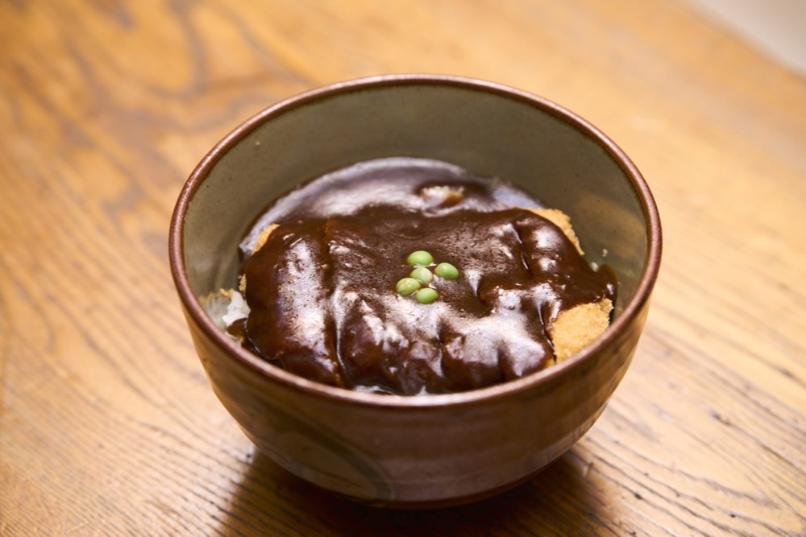
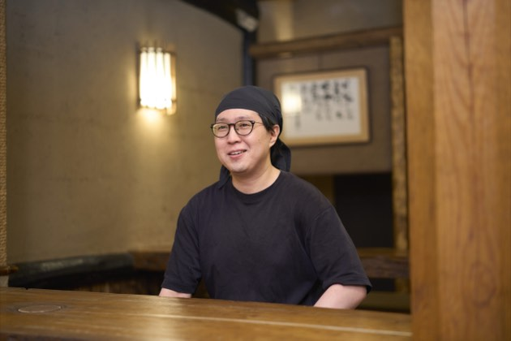
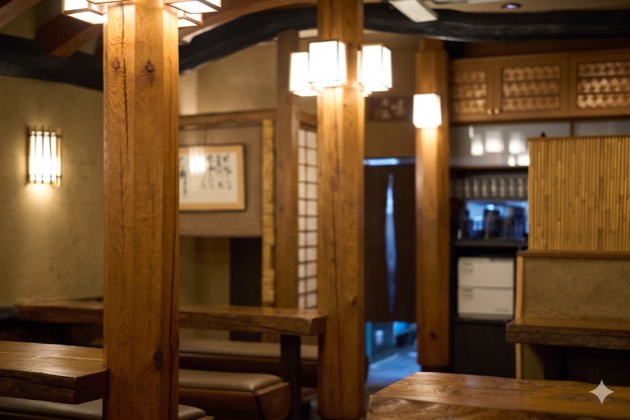
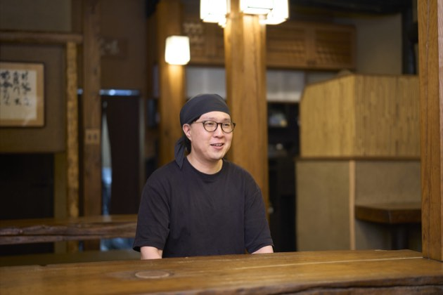
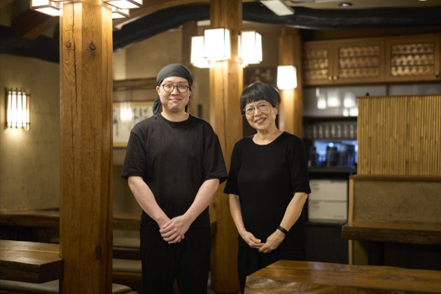

岡山名物デミカツ丼の元祖!野村の挑戦
野村 大希daiki nomura
カツ丼野村 店主
株式会社味司野村(屋号:名物 カツ丼 野村)昭和6年(1931年)創業。初代・野村佐一郎が帝国ホテルの方に作り方を教えていただき考案したドミグラスソースを用いたカツ丼が名物です。「デミカツ丼」の元祖として、創業以来の変わらぬ味と伝統を家族の絆で大切に守り続けている。
企業サイトを見るCHAPTER 01
創業のルーツと代々受け継がれる秘伝の味

Q創業の経緯と、名物である「ドミカツ丼」が誕生した背景について教えてください。
A当店の創業は昭和6年に遡ります。初代である野村佐一郎が東京の帝国ホテルの方に教えていただいた際、そこで出会ったドミグラスソースの奥深い味わいに大変感銘を受けたことがすべての始まりです。初代は「この美味しいソースをなんとか日本の主食である温かいご飯に合わせて大勢の人に食べてもらいたい」と強く思い立ちました。そこで試行錯誤の末に、揚げたてのとんかつと一緒にご飯にのせるという全く新しい丼を考案したのです。また初代のこだわりとして、とんかつとご飯の間には生ではなく「茹でたキャベツ」を敷いています。これがソースと絶妙に絡み合い、さっぱりと食べられる工夫となっています。この一杯が現在では岡山名物として知られるようになったデミカツ丼の元祖です。当時としては非常にハイカラで斬新なメニューでしたが、多くのお客様に愛され、今日では当店の看板商品として受け継がれています。
Q90年以上の長きにわたり、その変わらぬ味を守り続けている秘訣は何でしょうか?
A一番の秘訣は味の心臓部であるデミグラスソースの製法を「一子相伝」で厳格に守り抜いていることです。ソースのレシピや作り方は門外不出で、毎日膨大な時間と手間をかけて創業当時から変わらない手順でソースを仕込んでいます。材料をただ混ぜればできるというものではなく、火加減や煮込む時間、日々の気候による微妙な調整など、長年の経験と感覚が必要不可欠です。私たちは「伝統を守り続ける」という強い責任感と誇りを持っています。時代が変わっても、初代が完成させた究極の味を一切妥協することなく、実直に守り続けること。それこそが、何世代にもわたって通い続けてくださるお客様の期待を裏切らないための、私たち家族の揺るぎない覚悟です。
CHAPTER 02
一杯への情熱とお客様との温かい絆
Q昨今では多店舗展開やフランチャイズ化をする飲食店も多いですが、1店舗のみでの営業にこだわられている理由をお聞かせください。
Aこれまでにも多店舗展開や商業施設への出店など様々なありがたいお話をいただいたことは何度もあります。しかし私たちはあえてこの場所、1店舗だけで営業を続けるという選択をしています。その最大の理由はやはり「味のクオリティを絶対に落としたくない」からです。私たちのソースは手作りで非常に手間暇がかかります。店舗を増やせば、どうしても目が行き届かなくなり、機械化や外部委託に頼らざるを得なくなる部分が出てくるかもしれません。それは私たちが守るべき「野村の味」ではなくなってしまうことを意味します。自分たちの目の届く範囲で一杯一杯に魂を込めて丁寧に作り上げ、直接お客様にお届けする。この手作りの温かさと確かな品質を保つためには、この1店舗という規模が最も適していると考えています。不器用かもしれませんがこれが私たちなりの誠実な商売のあり方なのです。
Q日々お店に立たれてお客様と接する中で、どのような瞬間に大きなやりがいを感じられますか?
Aお客様の「美味しい」という笑顔と直接のお言葉をいただけた瞬間が何よりの喜びであり、日々の疲れが吹き飛ぶ最高のやりがいです。当店には子どもの頃に親御さんに連れられて来てくださり、大人になってからはご自身のお子さんを連れて三世代、四世代で通ってくださる地元の常連様が数多くいらっしゃいます。「昔からずっと変わらない味だね」と言っていただけることは、私たちが味を守り続けてきたことへの最高の褒め言葉です。また口コミ等を見て日本全国からはもちろん、海外からもわざわざ当店を目指して足を運んでくださる観光客の方々も非常に増えました。遠方から来られた方が、初めて食べるデミカツ丼に感動してくださる姿を見ると、岡山を代表する味として少しでも地域に貢献できているのかなと嬉しく思います。どんなに忙しくてもお客様からいただく温かい声援が、明日も頑張ろうという強い原動力になっています。




CHAPTER 03
未来へ繋ぐ伝統と新たな時代の組織づくり
Q今後の展望や、次世代への引き継ぎに向けた明確な目標についてお聞かせください。
A今後といいますか、これからも最大の目標は、お店の看板と伝統の味をしっかりと引き継いで行くことです。味そのもの、特にデミグラスソースの製法という「絶対に守るべき核」さえブレなければ、それ以外の経営のやり方や働き方は、時代に合わせて柔軟に変えていって良いと考えています。
Qこれからの時代にフィットした組織づくりや働き方改革についてはどのようにお考えですか。
A父や母の時代は、休む間も惜しんでがむしゃらに働くことが美徳とされてきたようです。しかし、これからの時代は違います。働くスタッフの幸せやワークライフバランスをしっかりと確保し、無理なく長く働き続けられる環境を整えることが、結果としてお店の持続可能な発展に繋がると確信しています。時代に合わせ、新しい感覚で今の時代にフィットした組織づくりや働き方改革を進めていきたいと思っています。守るべき伝統と変えるべき革新を見極めながら100年企業に向けて「名物 カツ丼 野村」をさらに進化させていきたいです。